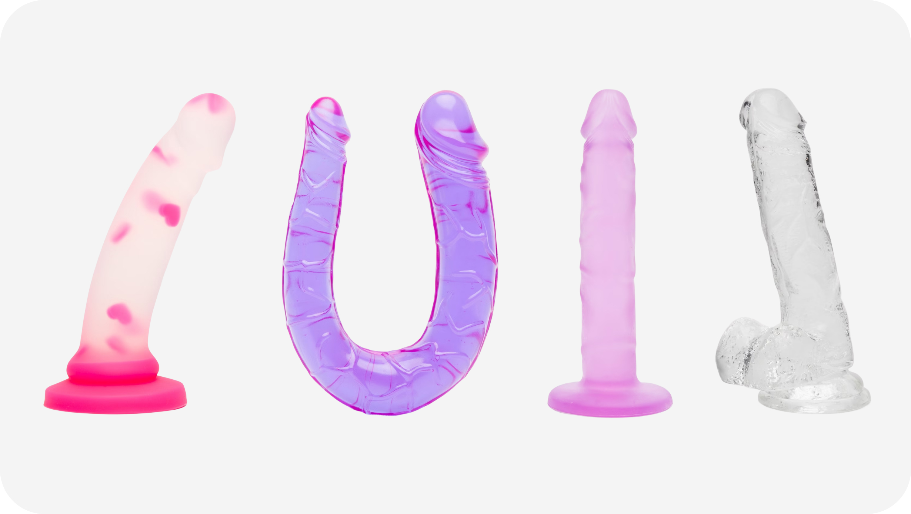
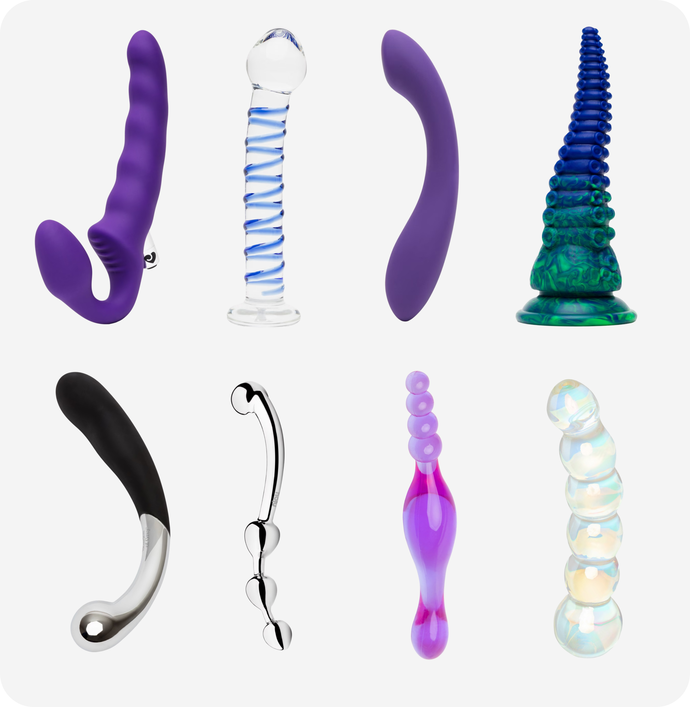

Фаллоимитатор, или дилдо, — это игрушка для проникновения, которая не вибрирует или делает акцент в первую очередь на форме, а не на моторе. Обычно это стержень разной длины и толщины, который может быть совсем гладким, слегка анатомичным или максимально похожим на эрегированный пенис с головкой и прожилками. Дилдо используют для вагинального и анального проникновения, соло или в паре, иногда сочетают с подвесными системами и креплениями типа страпона. Формат даёт возможность контролировать глубину, угол и темп движений, сосредотачиваясь на тактильных ощущениях от формы и материала.
Существует множество типов фаллоимитаторов. Реалистичные модели повторяют силуэт и пропорции пениса, нередко имеют выраженную головку, складочки у основания, иногда имитацию мошонки. Лаконичные абстрактные варианты чаще представляют собой гладкий или слегка изогнутый стержень без анатомических деталей: они могут быть разноцветными, полупрозрачными, с блёстками или фантазийными формами. Есть игрушки, специально заточенные под стимуляцию точки G или простаты, с выгнутым кончиком, утолщением на конце или характерным крючком.

Виды реалистичных фалоимитаторов

Виды нереалистичных фалоимитаторов
По материалам дилдо бывают силиконовые, стеклянные, металлические, из твёрдых полимеров или из мягких составов, напоминающих кожу. Силикон даёт мягкий, чуть пружинящий отклик и хорошо подходит для регулярного использования. Стекло и металл более жёсткие, отлично передают давление и дают возможность играть с температурой, их можно немного охладить или согреть в воде. Отдельная категория — дилдо с присоской у основания, которые удобно фиксировать на гладких поверхностях или использовать с совместимыми страпонами и поясными системами.
Подбор фаллоимитатора обычно начинается с размеров и планируемого применения. Для знакомства комфортнее умеренная длина и не слишком большой диаметр: это позволяет прислушаться к телу и понять, какие ощущения нравятся больше, более объёмное заполнение, лёгкое скольжение, акцент на конкретной зоне. Тем, кто уже хорошо ориентируется в своих предпочтениях, могут подойти более крупные, рельефные или, наоборот, очень узкие и длинные модели. Для анального использования удобнее варианты с постепенно расширяющимся кончиком и обязательно с выраженным ограничителем или широким основанием.
Материал выбирают исходя из ощущений и привычек по уходу. Силикон универсален, приятен коже и сравнительно прост в очистке, при этом требует совместимости с водными смазками. Стекло и металл подойдут тем, кто любит чёткие, плотные ощущения и не боится жёстких материалов. Если планируется использование с креплениями, важно убедиться, что основание и размеры подходят к выбранной системе: многие страпон-пояса ориентируются на диаметр кольца или форму базовой части. Также стоит обратить внимание на текстуру: выраженный рельеф даёт более интенсивные ощущения, гладкая поверхность мягкое скользящее проникновение.
Перед использованием фаллоимитатор и участок тела, с которым он будет контактировать, стоит обеспечить достаточным количеством подходящего лубриканта. Для вагинального проникновения чаще выбирают классические водные смазки, для анальной практики более густые формулы с хорошим скольжением. Вводить дилдо удобнее постепенно, без резких движений, позволяя мышцам привыкнуть к диаметру и длине. Поза может быть любой комфортной: лёжа на спине с согнутыми ногами, на боку, в полуприседе, на корточках, с опорой на руки, многое зависит от того, какое направление и глубину хочется контролировать.
В соло-практике можно экспериментировать с темпом, углами, глубиной проникновения, задержкой в определённых точках, сочетать движения с стимуляцией других зон руками или дополнительной игрушкой. В парном взаимодействии фаллоимитатор нередко используют как продолжение руки или как часть страпона: один человек управляет движениями, другой фокусируется на ощущениях внутри. После завершения сессии дилдо промыть тёплой водой с мягким средством, тщательно очищая все рельефные участки, затем высушить и убирать в отдельный мешочек или коробку, чтобы материал не терся о другие игрушки и не собирал пыль.
Фаллоимитатор — гибкий по возможностям формат, который может быть и мягкой тренировкой глубины и наполнения, и яркой частью сексуального сценария с любым уровнем фантазийности. Удачно подобранный размер, форма и материал помогают точнее чувствовать своё тело и его отклик на разные типы проникновения.